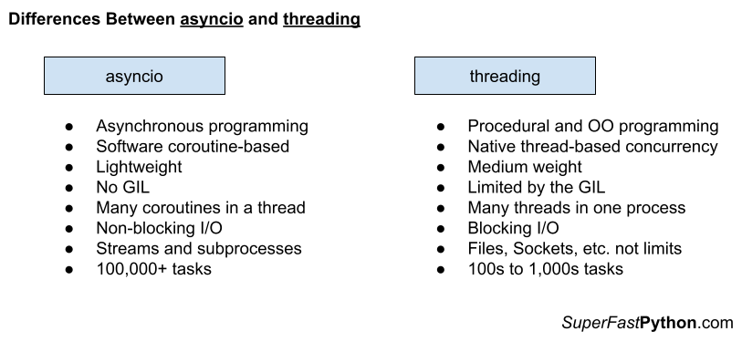

Asyncio vs Threading in Python
Asyncio provides coroutine-based concurrency for non-blocking I/O with streams and subprocesses. Threading provides thread-based concurrency, suitable for blocking I/O tasks.
In this tutorial, you will discover the difference between Asyncio and Threading and when to use each in your Python projects.
Let's get started.
What is Asyncio
The "asyncio" module provides coroutine-based concurrency in Python.
Broadly, asyncio refers to the ability to implement asynchronous programming in Python.
Specifically, it refers to two elements:
- The addition of the "asyncio" module to the Python standard library in Python 3.4.
- The addition of async/await expressions to the Python language in Python 3.5.
Together, the module and changes to the language facilitate the development of Python programs that support coroutine-based concurrency, non-blocking I/O, and asynchronous programming.
Python 3.4 introduced the asyncio library, and Python 3.5 produced the async and await keywords to use it palatably. These new additions allow so-called asynchronous programming.
-- Page vii, Using Asyncio in Python, 2020.
The Python language was changed to accommodate asyncio with the addition of expressions and types.
More specifically, it was changed to support coroutines as first-class concepts. In turn, coroutines are the unit of concurrency used in asyncio programs.
A coroutine is a function that can be suspended and resumed.
coroutine: Coroutines are a more generalized form of subroutines. Subroutines are entered at one point and exited at another point. Coroutines can be entered, exited, and resumed at many different points.
-- Python Glossary
A coroutine may suspend for many reasons, such as executing another coroutine, e.g. awaiting another task, or waiting for some external resources, such as a socket connection or process to return data.
Many coroutines can be created and executed at the same time. They have control over when they will suspend and resume, allowing them to cooperate as to when concurrent tasks are executed.
This is called cooperative multitasking and is different from the multitasking typically used with threads called preemptive multitasking tasking.
A coroutine can be defined via the "async def" expression. It can take arguments and return a value, just like a function.
For example:
# define a coroutine
async def custom_coro():
# ...
Calling a coroutine function will create a coroutine object, this is a new class. It does not execute the coroutine function.
...
# create a coroutine object
coro = custom_coro()A coroutine can execute another coroutine via the await expression.
This suspends the caller and schedules the target for execution.
...
# suspend and schedule the target
await custom_coro()The "asyncio" module provides functions and objects for developing coroutine-based programs using the asynchronous programming paradigm.
Specifically, it supports non-blocking I/O with subprocesses (for executing commands) and with streams (for TCP socket programming).
asyncio is a library to write concurrent code using the async/await syntax.
-- asyncio — Asynchronous I/O
Central to the asyncio module is the event loop.
This is the mechanism that runs a coroutine-based program and implements cooperative multitasking between coroutines.
The event loop is the core of every asyncio application. Event loops run asynchronous tasks and callbacks, perform network IO operations, and run subprocesses.
-- Asyncio Event Loop
The module provides both a high-level and low-level API.
The high-level API is for us Python application developers. The low-level API is for framework developers, not us, in most cases.
Most use cases are satisfied using the high-level API that provides utilities for working with coroutines, streams, synchronization primitives, subprocesses, and queues for sharing data between coroutines.
The popular parts of the high-level API provides the following:
- Tasks
- Manage an asyncronous task with asyncio.Task.
- Create tasks with asyncio.create_task()
- Get tasks with asyncio.all_tasks() and asyncio.current_task()
- Execite many tasks with asyncio.gather()
- Wait for tasks with asyncio.wait(), asyncio.wait_for(), and asyncio.as_completed()
- Run blocking tasks asyncronously with asyncio.to_thread()
- Streams
- Open a client connection with asyncio.open_connection()
- Open a server with asyncio.start_server()
- Read from a socket with asyncio.StreamReader
- Write to a socket with asyncio.StreamWriter.
- Syncronization Primitives
- Protect critical sections with an asyncio.Lock.
- Signal between coroutines with an asyncio.Event.
- Use the wait/notify pattern with asyncio.Condition
- Limit access to a resource with asyncio.Semaphore
- Coordinate coroutines with asyncio.Barrier.
- Subprocesses
- Manage a subprocess via the asyncio.subprocess.Process
- Run a command with asyncio.create_subprocess_exec()
- Run a command via the shell with asyncio.create_subprocess_shell()
- Queues
- Use a FIFO queue via asyncio.Queue.
- Use a LIFO queue via asyncio.LifoQueue.
- Use a priority queue via asyncio.PriorityQueue.
The lower-level API provides the foundation for the high-level API and includes the internals of the event loop, transport protocols, policies, and more.
... there are low-level APIs for library and framework developers
-- asyncio — Asynchronous I/O
Now that we are familiar with Asyncio, let's take a look at Threading.
What is Threading
The "threading" module provides thread-based concurrency in Python.
Technically, it is implemented on top of another lower-level module called "_thread".
This module constructs higher-level threading interfaces on top of the lower level _thread module.
-- threading — Thread-based parallelism
A thread refers to a thread of execution in a computer program.
Each program is a process and has at least one thread that executes instructions for that process.
Thread: The operating system object that executes the instructions of a process.
-- Page 273, The Art of Concurrency, 2009.
Central to the threading module is the threading.Thread class that provides a Python handle on a native thread (managed by the underlying operating system).
A function can be run in a new thread by creating an instance of the threading.Thread class and specify the function to run via the "target" argument. The Thread.start() method can then be called which will execute the target function in a new thread of execution.
For example:
...
# create a thread
thread = Thread(target=task)
# start the new thread
thread.start()Alternatively, the threading.Thread class can be extended and the Thread.run() function overrides to specify the code to run in a new function. The new class can be created and the inherited Thread.start() method is called to execute the contents of the run() function in a new thread of execution.
The properties of the thread can be set and configured, e.g. name and daemon, and one thread may join another, causing the caller thread to block until the target thread has terminated.
You can learn more about the life-cycle of a Python thread in the tutorial:
The rest of the "threading" module provides tools to work with threading.Thread instances.
This includes a number of static module functions that allow the caller to get a count of the number of active threads, get access to a threading.Thread instance for the current thread, enumerate all active threads in the process and so on.
There is also a threading.local API that provides access to thread-local data storage, a facility that allows threads to have private data not accessible to other threads.
Finally, the threading API provides a suite of concurrency primitives for synchronizing and coordinating threads.
This includes mutex locks in the threading.Lock and threading.RLock classes, semaphores in the threading.Semaphore class, thread-safe boolean variables in the threading.Event class, a thread with a delayed start in the threading.Timer class and finally a barrier pattern in the threading.Barrier class.
The API of the threading.Thread class and the concurrency primitives were inspired by the Java threading API, such as java.lang.Thread class and later the java.util.concurrent API.
"Thread module emulating a subset of Java's threading model."
-- threading.py
In fact, the API originally had many camel-case function names, like those in Java, that were later changed to be more Python-compliant names via PEP 8 – Style Guide for Python Code in 2001.
# Note regarding PEP 8 compliant names
# This threading model was originally inspired by Java, and inherited
# the convention of camelCase function and method names from that
# language.-- threading.py
A key limitation of threading.Thread for thread-based concurrency is that it is subject to the Global Interpreter Lock (GIL). This means that only one thread can run at a time in a Python process, unless the GIL is released, such as during I/O or explicitly in third-party libraries.
In CPython, due to the Global Interpreter Lock, only one thread can execute Python code at once (even though certain performance-oriented libraries might overcome this limitation). [...] However, threading is still an appropriate model if you want to run multiple I/O-bound tasks simultaneously.
-- threading — Thread-based parallelism
This limitation means that although threads can achieve concurrency (executing tasks out of order), it can only achieve parallelism (executing tasks simultaneously) under specific circumstances.
You can learn more about Python threading in the guide:
Now that we are familiar with Asyncio and Threading, let's compare and contrast each.
Comparison of Asyncio vs Threading
Now that we are familiar with Asyncio and Threading, let's review their similarities and differences.
Similarities Between Asyncio and Threading
The Asyncio and Threading classes are very similar, let's review some of the most important similarities.
Some key similarities between the modules include:
- Both modules are used for concurrency.
- Both modules are suited for concurrent I/O tasks.
- Both modules offer generally the same synchronization primitives.
- Both modules offer safe queue data structures.
- Both types of concurrency can suffer race conditions and deadlocks.
Let's take a closer look at each in turn.
1. Both Modules are Used For Concurrency
Both the asyncio module and the threading module are intended for concurrency.
There are whole classes of problems that require the use of concurrency, that is running code or performing tasks out of order or overlapping order.
Problems of these types can generally be addressed in Python using coroutines or threads, at least at a high level.
2. Both Modules are Suited for I/O Tasks
The asyncio module is specifically designed for use with non-blocking I/O tasks.
It offers non-blocking I/O with streams for socket or network programming, and non-blocking I/O with subprocesses for running commands on the system.
The threading module and threads specifically are suited to I/O-bound tasks. This is because threads are limited by the global interpreter lock that limits only one thread from running at a time.
This lock is released when threads perform I/O such as with files, sockets, and peripheral devices.
3. Both Support The Same Synchronization Primitives
Both the asyncio module and the threading module support mostly the same synchronization primitives.
Synchronization primitives are mechanisms for synchronizing and coordinating units of concurrency, like coroutines and threads.
synchronization primitives with the same classes and same API are provided for use with both coroutines and threads, for example:
- Locks (mutex) with asyncio.Lock and threading.Lock.
- Condition Variables with asyncio.Condition and threading.Condition.
- Semaphores with asyncio.Semaphore and threading.Semaphore.
- Event Objects with asyncio.Event and threading.Event.
- Barriers with asyncio.Barrier and threading.Barrier.
This allows the same concurrency design patterns to be used with either asyncio-based concurrency or thread-based concurrency.
4. Both Support The Same Safe Queue Data Structures
Queues are a data structure commonly used in concurrency.
Tasks can add or produce tasks to the queue and other tasks can retrieve or consume tasks from the queue.
They allow units of concurrency to communicate and share data in a safe manner.
Both the asyncio and threading modules offer safe queues.
Asyncio offers the asyncio.Queue, asyncio.LifoQueue and asyncio.PriorityQueue coroutine-safe queues.
Threading offers the queue.Queue, queue.SimpleQueue, queue.LifoQueue, and queue.PriorityQueue thread-safe queues.
5. Both Can Suffer Race Conditions and Deadlocks
Both coroutines and threads can suffer concurrency failure models.
These are a class of programming bugs specific to concurrent programming.
Race conditions occur when two or more units of concurrency access a sensitive piece of code, called a critical section, leaving it in an unknown or inconsistent state. This can lead to data corruption, data loss, and unknown behavior.
Deadlocks occur when one unit of concurrency waits for a situation that can never occur. They can happen when there is circular waiting and timing and coordination issues.
Both threads and coroutines can suffer race conditions and deadlocks.
Differences Between Asyncio and Threading
The Asyncio and Threading modules are also quite different, let's review some of the most important differences.
Some key similarities between the modules include:
- Asynchronous vs Procedural/Object-oriented Programming
- Coroutine-based concurrency vs Thread-based concurrency
- No GIL vs GIL
- Coroutines in One Thread vs Threads in One Process
- Limited I/O Tasks vs No Limit on I/O Tasks
1. Asynchronous vs Procedural/Object-oriented Programming
Asyncio is focused on asynchronous programming.
This is a programming paradigm where calls are issued and occur or are fulfilled at some later time.
A handle on the asynchronous tasks may be used to retrieve results later or check on the status of a task. Callbacks may be used to respond to events as they occur.
This is different to threading which is generally intended for procedural programming and object-oriented programming.
Function calls are made and results are retrieved. These may occur entirely in a new thread or not, with no delegation for later execution.
This is a fundamental difference between the two modules and may explain all other differences.
2. Coroutine-based Concurrency vs Thread-based Concurrency
The asyncio module is focused on providing and supporting coroutine-based concurrency.
These are a lightweight type of concurrency as coroutines are essentially functions.
Multitasking is achieved cooperatively, where we specifically chose the points where coroutines suspend and the event loop controls the context switching between coroutines.
The threading module is focused on providing support for thread-based concurrency.
These are a more heavyweight unit of concurrency. Threads are created, run, and managed by the underlying operating system.
The operating system chooses which threads run and for how long, and controls the switching from thread to thread. They are represented in Python with a threading.Thread object.
3. No GIL vs GIL
Coroutines in the asyncio module are not limited by the Global Interpreter Lock or GIL.
This is a lock that ensures that the internals of the Python interpreter is thread-safe.
The concept of a GIL does not make sense in the context of coroutines as all coroutines in an event loop execute within a single thread.
Threads in the threading module are subject to the GIL.
Only a single thread may interact with the internals of the Python interpreter at a time.
This limitation is in place most of the time unless it is removed in some specific situations, such as performing blocking I/O and in some third-party libraries.
4. Coroutines in One Thread vs Threads in One Process
The scale of coroutines in the asyncio module and threads in the threading module operate at different scopes.
Many coroutines are managed in an event loop by a single thread.
Whereas many threads are managed by a single Python process.
This creates a hierarchical relationship between coroutines and threads, and even processes.
For example:
- Many coroutines in one thread.
- Many threads in one process.
- Many processes on one system.
5. Limited I/O Tasks vs No Limit on I/O Tasks
Asyncio is specifically focused on offering non-blocking I/O.
This includes I/O with commands running in subprocesses and I/O with streams for TCP network connections.
Other types of I/O can be performed in asyncio, but must be simulated using threads or processes under the covers.
Threading is suited to I/O-bound tasks, almost without exception.
Any I/O performed in Python will involve the GIL being released, allowing multiple threads to execute at the same time.
This involves more than subprocess and socket I/O but may also include file I/O and I/O with all manner of devices.
Summary of Differences
It may help to summarize the differences between Asyncio and Threading.
Asyncio
- Asynchronous programming
- Software coroutine-based concurrency
- Lightweight
- No GIL
- Many coroutines in one thread
- Non-blocking I/O with subprocesses and streams
- 100,000+ tasks
Threading
- Procedural and Object-oriented programming.
- Native thread-based concurrency
- Medium weight, heavier than coroutines, lighter than processes.
- Limited by the GIL
- Many threads in one process
- Blocking I/O, generally
- 100s to 1,000s tasks
The figure below provides a helpful side-by-side comparison of the key differences between Asyncio and Threading.

Takeaways
You now know the difference between Asyncio and Threading and when to use each.
If you enjoyed this tutorial, you will love my book: Python Asyncio Jump-Start. It covers everything you need to master the topic with hands-on examples and clear explanations.